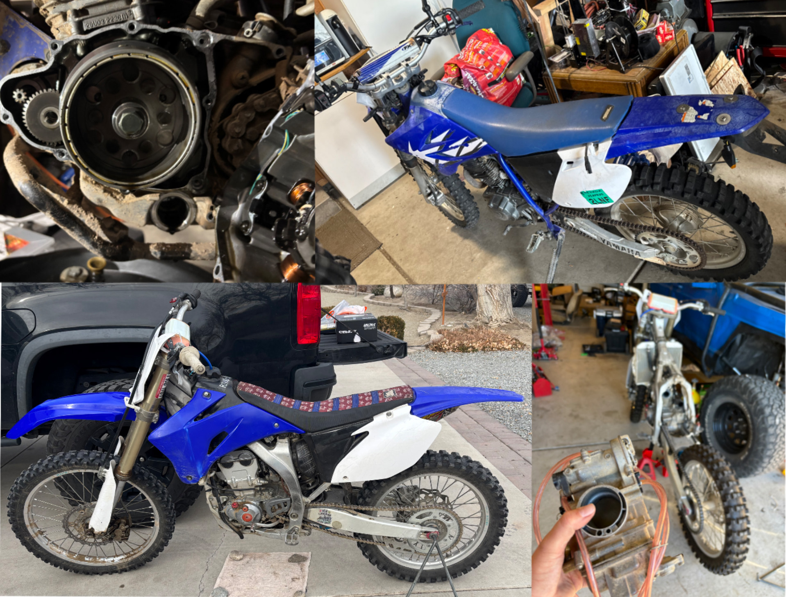

I have performed maintenance, repair, and troubleshooting on Yamaha off-road motorcycles, including both TTR and YZ models. This work has provided hands-on experience with engine, suspension, control, and drivetrain systems.
Work has included checking valve clearances, servicing timing components, replacing timing chains and tensioners, and troubleshooting engine operation.
Additional repairs have included engine case work, carburetor rebuilding and tuning, throttle controls, control levers, and fork seal replacement.
Mechanical issues are diagnosed through inspection, testing, adjustment, and comparison of system behavior before and after repairs.
Engine Repair • Valvetrain • Engine Timing • Carburetion • Suspension • Controls • Mechanical Diagnostics